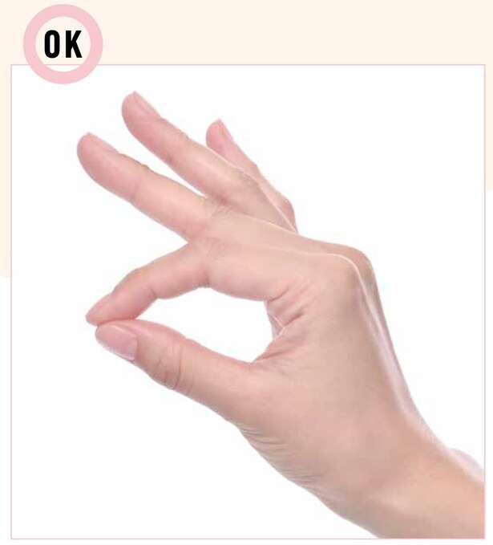
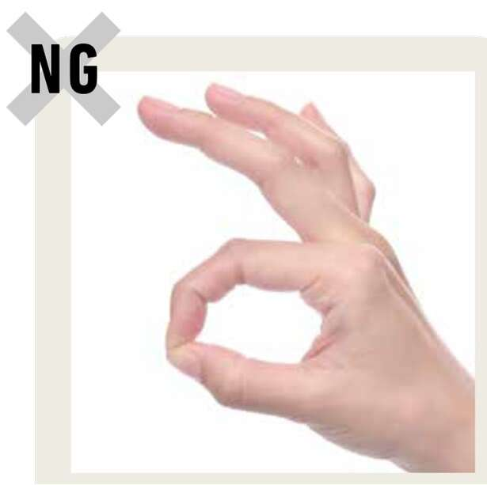
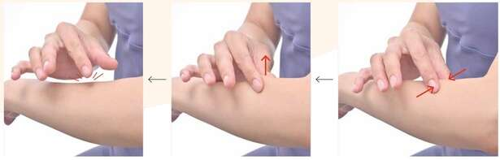
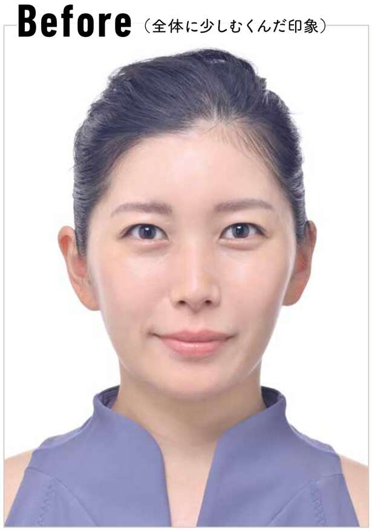
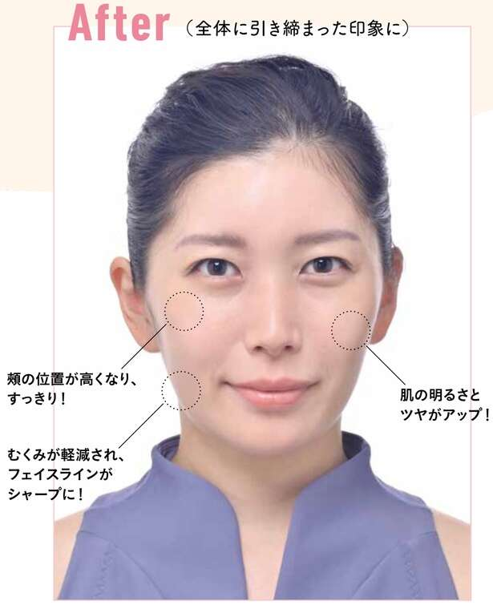
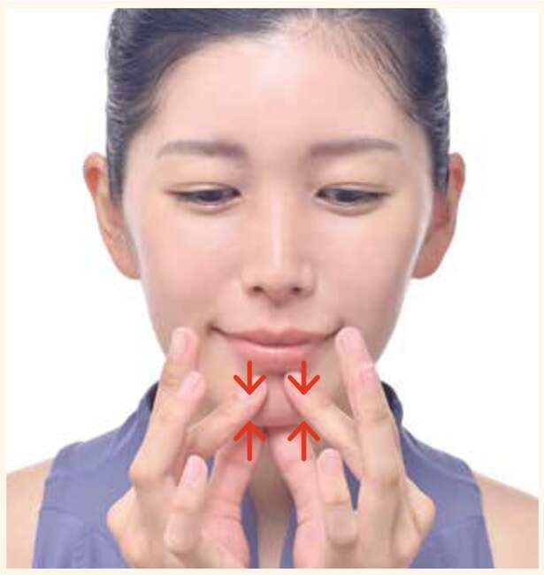
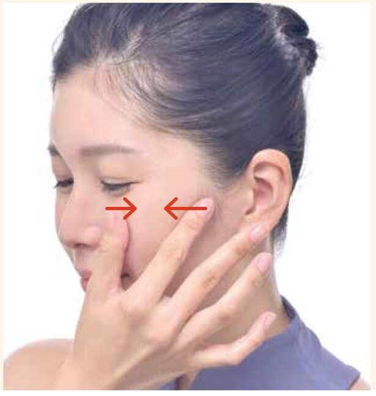

“只需拉动30秒，肌肤美丽，身体健康！神奇手指淋巴 （Honey MIO（加藤未央）/KADOKAWA）第 1 弹【共 7 集】
无需工具或电源！您知道每天只用手指30秒就能消除衰老现象的“手指淋巴”方法吗？发明它的人是Honey MIO，一位非常受欢迎的手指淋巴治疗师。她的书“只需拉动30秒，肌肤美丽，身体健康！神奇手指淋巴（KADOKAWA）推出基于医学淋巴按摩的自我护理，任何人都可以轻松练习。不需要特殊的面部设备或强力。只需每天用手指轻轻触摸需要关注的部位 30 秒即可。这次，我们将介绍本书中的“神奇手指淋巴”方法，您可以随时随地进行，让肌肤焕发光彩，拥有健康的身体。
*本文根据Honey MIO（加藤未央）所著《只需拉动30秒，你就能拥有美丽肌肤和健康！》的部分摘录和编辑自《神奇手指淋巴》。
手指淋巴的基本形状
用拇指和食指的指腹轻轻触摸皮肤。
这取决于您想要改善的症状和您想要治疗的部位，但顾名思义，手指淋巴治疗主要是使用手指进行的。手指的基本形状是用拇指和食指的指腹接触皮肤，其余三个手指自然伸展。
关键是永远不要强迫自己。当触摸你的皮肤时，想象一下只捏一张薄纸以防止其撕裂。有些人可能会担心，“这么弱的力能有效吗？”但是，用弱的力可以改善浅层淋巴管的流动。请不要举起指甲。
关于手指淋巴的3大要点
1. 用拇指和食指指腹触摸皮肤。
3.自然伸展剩余的三个手指。
3.自然伸展剩余的三个手指。

基本思想是用拇指和食指的指腹触摸皮肤。如果你自然地伸展剩下的三个手指，就很难对它们施加压力。

抬起指甲或对手指施加任何力时都没有好处。
指法的基本方法
淋巴护理是轻柔、缓慢、仔细的
了解了指尖的基本形状后，我们就来掌握如何移动手指。通过轻轻拉扯皮肤，手指淋巴促进淋巴流动并收集废物。
首先，将皮肤轻轻拉到一起，然后沿垂直于皮肤的方向慢慢拉动。请勿突然用力拉扯。移开手指时，不要用力移开手指或将拉伸的皮肤向后推。它不仅会损害您的皮肤，还会暂时阻碍淋巴液的流动。从开始到结束都要轻柔、缓慢、小心。
指法的基本规则
1.每次集中护理时间为30秒。
如果您想要集中护理您关心的区域，请重复“靠近、拉近、再拉回来”，每个区域最多 30 秒。小心不要这样做太久，否则会施加不必要的力。
2.整体护理每个部位只需进行一次
如果您想全面呵护您的皮肤，每个过程执行一次即可获得足够的效果。
3.根据范围改变手指的使用方式
当治疗颈部或胃部等较宽区域时，请使用拇指、食指和中指；治疗上臂、腋下或下背部等更广泛区域时，请使用手指和手掌。

1. 用拇指和食指指腹轻轻按压皮肤。皮肤移动几毫米就可以了。
2. 轻轻垂直拉动聚集的皮肤 2 至 3 秒。
3. 轻轻松开拇指和食指 2 至 3 秒，然后将皮肤放回原处。
抬起按摩

面部问题
● 我担心脸部浮肿和暗沉。
● 面部线条变得下垂。
● 脸颊周围看起来丰润。

提升按摩流程
1.将脸部线条拉到一起

用双手的拇指和食指夹住下巴，轻轻地将皮肤压在一起，然后向后拉。重复此操作，直到到达耳朵底部，移动手指的位置。
2. 将耳朵前部拉到一起
将左手的拇指和食指放在左耳前。轻轻地将皮肤压在一起并向后拉。在右耳前面做同样的事情。
Point
耳朵前面有很多淋巴结，尽量一次拉的次数不要超过3次。
3.将双颊收拢

将右手的拇指和食指放在左脸颊的最高点。轻轻地将皮肤压在一起并向后拉。对整个脸颊做同样的事情，改变手指的位置。用左手在右脸颊上做同样的事情。